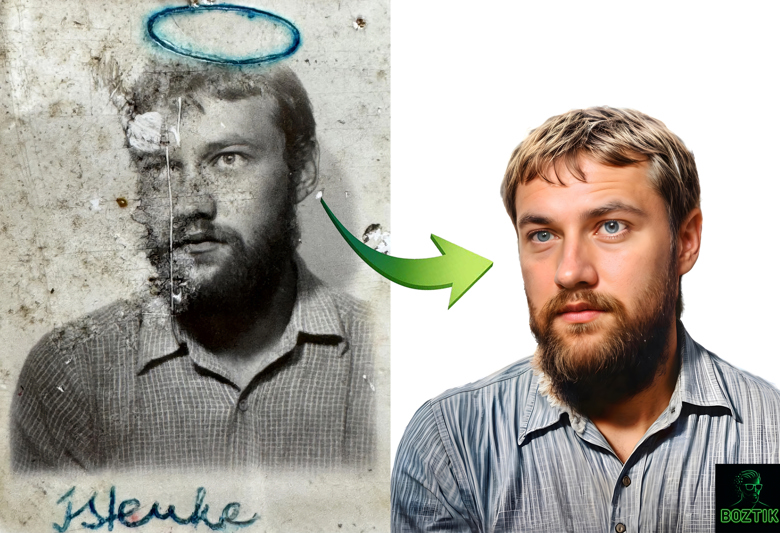
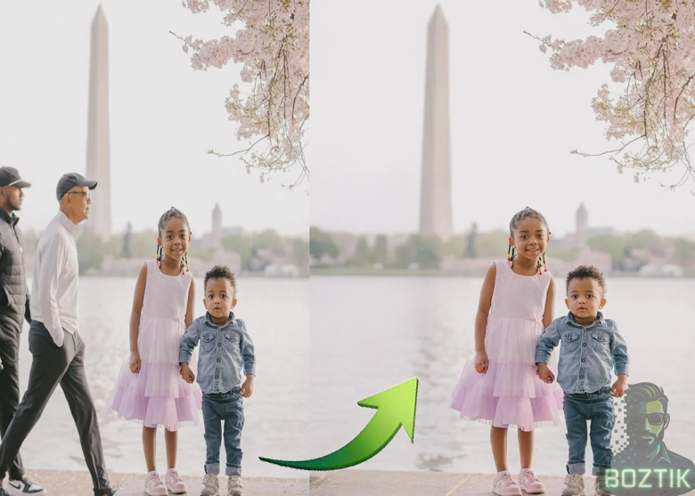
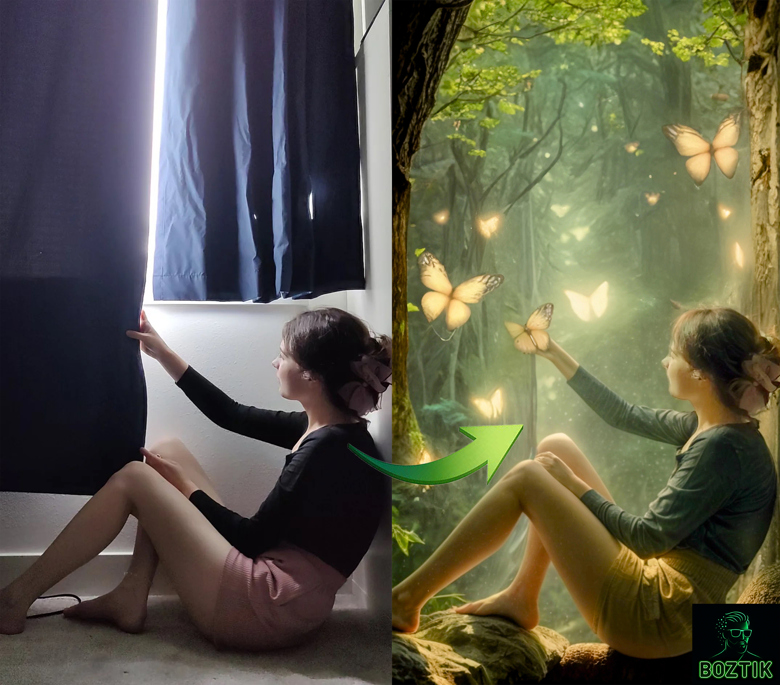

Creative Work
Professional Photoshop editing, photo restoration, object removal, and creative image manipulation — done by hand, one image at a time.
Photoshop editing. Restoration. Creative image work.
Boztik is an independent creative brand — professional photo restoration and editing, creative image manipulation, free browser tools, and practical guides, all built by the same person.
Boztik began with real Photoshop editing, restoration and creative image work, and grew into a collection of practical browser tools, guides and delivery systems built around the workflows that work actually creates.
Every tool and guide answers a problem that came up while doing real edits — not the other way around.
Real photo restoration, retouching, compositing and image editing — done by hand, one image at a time.
Practical browser tools created around real creative workflows and the problems they actually present.
Editing, tools, guides and secure delivery are all part of the same independent Boztik ecosystem.
Creative work, tools, guides, and the Creative Toolkit — all part of the wider Boztik brand.
Professional Photoshop editing, photo restoration, object removal, and creative image manipulation — done by hand, one image at a time.
Practical browser-first tools for creative workflows, from image analysis to AI creative assistance.
Useful notes for photographers, designers, and creators — written from doing the work, not generic templates.
The Boztik browser extension and creative utilities — one product within the wider Boztik ecosystem.
Learn more about the Creative ToolkitWhichever you need, it comes from the same place: real creative and technical craft.
Real editing work, delivered securely — restoration, retouching, and enhancement for photos that matter.
Image Inspector, color and font tools, and an AI Creative Assistant — free, in your browser, for Chrome and Edge.
A small sample of the restoration, retouching, and creative compositing behind Boztik — real client and personal projects, not stock examples.



Time-limited links, no account required, and no public gallery. Finished files reach only the person they're meant for — the moment the work is done.
The latest update adds new creative tools and improvements designed to make image research, analysis and everyday creative workflows faster and easier.
Free browser extension for Chrome and Microsoft Edge. Installed copies update automatically through the browser's extension store.
Image Inspector, image research, color palette & font tools, page capture, and an AI Creative Assistant — the full list of features lives on the Creative Toolkit page.
Explore all the features →These lightweight experiences are built to be useful on their own while naturally encouraging visitors to try the Boztik extension.
Analyze your own images directly in your browser with resolution, palette, metadata, and creative editing tips.
Launch ToolGet instant guidance for Photoshop, Firefly prompts, workflow improvements, and image-editing decisions.
Open AssistantInstall the extension in seconds and bring professional creative analysis to your everyday browsing.
Install from the official Chrome Web Store and keep everything automatically updated.
Install from Microsoft Edge Add-ons and enjoy the same fast, polished experience.
Boztik Creative Toolkit is proudly featured on trusted software directories and marketplaces, making it easier for creators to discover our tools.
Discover Boztik Creative Toolkit on LaunchZone and support the project by visiting our listing.
View ListingPractical notes on restoration, retouching, and editing — written from real editing work, not generic SEO templates.
What actually gets fixed in a damaged photograph — scratches, fading, missing detail — and why over-restoring is its own mistake.
Read the guide → RetouchingWhy object removal is really a reconstruction problem, and what makes a removal look invisible instead of obvious.
Read the guide →Boztik started with hands-on photo editing and restoration work — the toolkit grew out of the exact problems that work kept creating.
After editing thousands of images for clients, the real pain points became clear: repetitive analysis, slow asset review, and constant tab-switching.
Boztik brings the tools creators use most into one calm, lightweight browser experience.
Whether you work in photography, digital art, design, marketing, or content production, Boztik helps you stay focused and make smarter decisions faster.
Get real editing work done, or install the free toolkit and try it yourself — either way, it starts here.